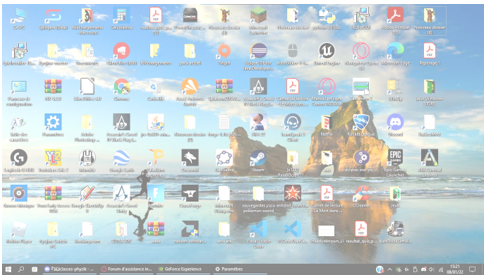
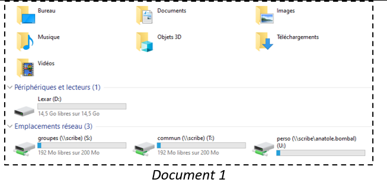
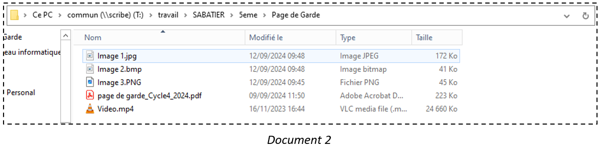
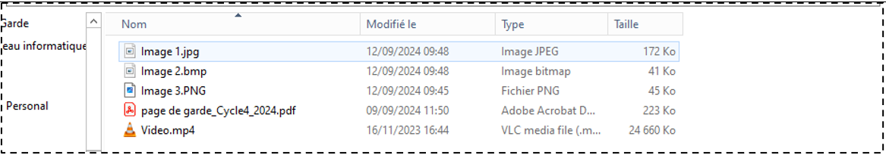
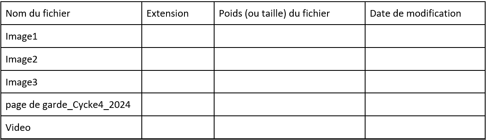
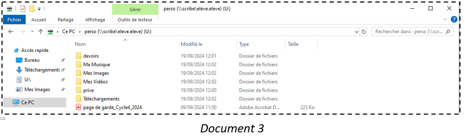
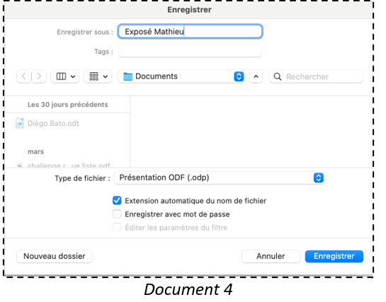
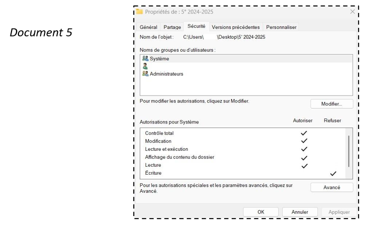

Séance 4: Organiser un espace de stockage
Situation déclenchante
Mathieu a beaucoup de fichiers informatiques différents stockés sur son ordinateur.
Il doit envoyer son diaporama qu’il a préparé pour son exposé à l’oral. Mathieu a des difficultés à le retrouver.

Mes constats, mes observations :
……………………………
……………………………
……………………………
Mon problème à résoudre :
Comment …………………………… ?
Mes idées pour résoudre le problème:
……………………………
……………………………
……………………………
Activité 1 (niveau 1) : Je sais reconnaître un fichier, un dossier, une arborescence;


N1.1 En utilisant les documents ci-dessus, citer le nom d’un dossier :
……………………………
N1.2 Quels sont les fichiers que tu peux trouver dans le dossier “activité page de garde” créé par ton professeur ?
……………………………
…………………………… ..…
N1.3 Quel est le chemin de l’arborescence pour trouver le dossier page de garde ?
……………………………
Activité 2 (niveau 2) : je sais identifier les différents types de fichiers à partir de leur extension (texte, image, tableur ou vidéo).
Dans l’espace personnel de Mathieu, plusieurs fichiers ont été stockés. Peux-tu aider Mathieu à repérer tous ses fichiers.

N2. A partir du document 2, compléter le tableau ci-dessous

Activité 3 (niveau 3) : je sais les stocker et les classer dans une arborescence.

Pour retrouver plus facilement ses documents, il faut créer une arborescence dans son espace personnel.
N3.1 Créer un dossier qui sera nommé “5° 2024-2025” dans son espace personnel du serveur pédagogique.
N3.2 Une fois ce dossier créé, il faudra créer un sous-dossier par discipline dans le dossier “5° 2024-2025” préalablement créé (Français - Mathématiques - Hist-Géo-EMC - LV1 - LV2 - …)
Ressources :
Vidéo créer un dossier
https://www.youtube.com/watch?v=3gIM92h9ihI
Activité 4 (niveau 4) : je connais les droits en écriture ou en lecture dans les différents dossiers.

N4.1 D’après le document 4, que doit cocher Mathieu pour sécuriser son fichier ?
……………………………

N4.2 D’après le document 5, peut-on modifier lire le dossier ? …….
N4.3 D’après le document 5, peut-on modifier modifier le dossier ? …….
Ma synthèse
Qu’est-ce qu’une arborescence ?
……………………………
……………………………
Fiches Connaissances:
Qu’est-ce que des droits d’accès ?
……………………………
……………………………
Fiches Connaissances: